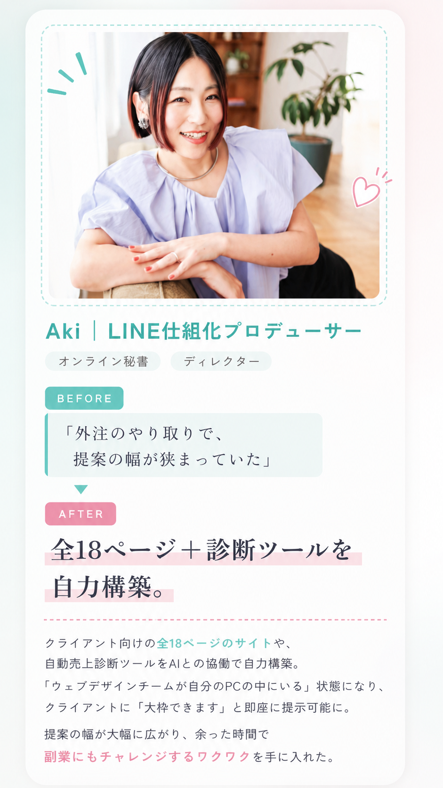
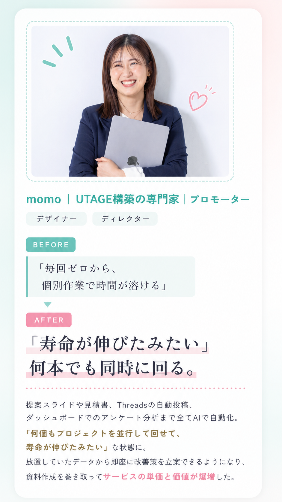
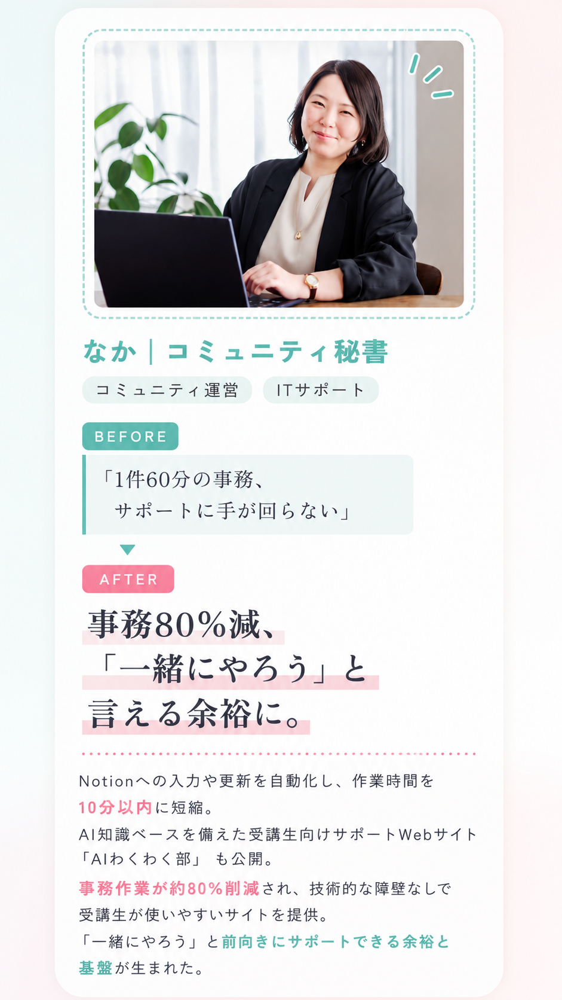
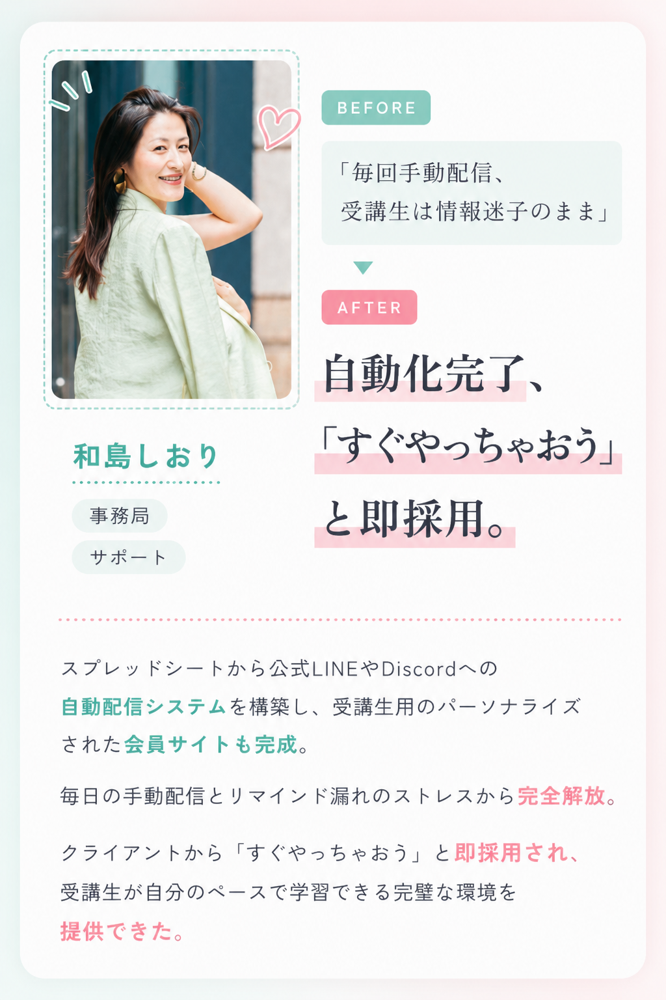
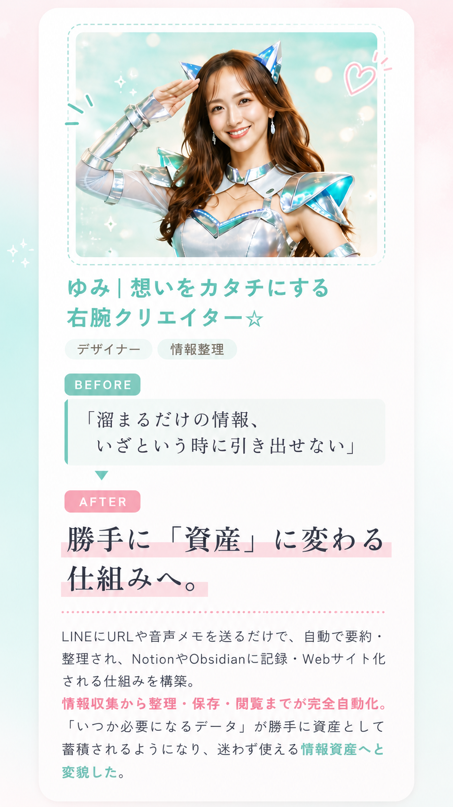

無料説明会に参加する
※ 説明会は無料です。参加後の勧誘はありません。


※ 説明会は無料です。参加後の勧誘はありません。





実際に受講してどう変わったか。
仕事の仕方、事業の進め方、毎日の時間の使い方。
ここにインタビュー動画の概要や
見どころを書いてください。
※ ここに動画の長さや対象者情報を入れてください
AIに興味はあるけど、なんとなく難しそうで後回しにしていませんか。
忙しいけど、好きなことで稼ぎたい
子育て・仕事・家事の合間に、好きを仕事にしたいと思っているけど時間がない。
AIへの苦手意識をなくしたい
ChatGPTは試したけど使いこなせていない。何から始めれば良いかわからない。
もっと収入の柱を増やしたい
今の仕事は安定しているけど、将来のために新しいスキルと収入源が欲しい。
右腕・サポート業務として活躍したい
起業家の右腕として、AIを使いこなせるアシスタントになりたい。
発信・LP・LINEを自分で作れるようになりたい
外注費がかさんでいる。自分でサクッと作れれば、もっと事業を動かせるのに。
クライアントワークの単価を上げたい
今のスキルに加えてAI活用を提供できれば、もっと単価を上げられると感じている。
そのお悩み、AI LABOで解決できます

90分の実践講座から始められる。
当日中に使い始められるスキルを、仲間と一緒に身につける。

毎日の繰り返し作業をAIに任せて、時間を取り戻す。週3時間の節約から始められます。

雑務から解放されて、クリエイティブな仕事・企画に集中できる環境を作る。

LP・SNS投稿・LINE配信をAIで効率化。一人でも回る仕組みが手に入る。

AI活用スキルをサービスに加えることで、単価アップと差別化を同時に実現できる。

AIを教える・使って制作する新しい切り口で、収入の柱を増やせる。

ここに野田さんとの関係性・学んだ内容について書いてください。師匠の教えを実践ベースで伝えます。

デザイン・マーケティング・AI活用、それぞれの専門家が担当。浅く広くではなく、深く実践的に学べる。

実際に売上を立ててきた人間が教えるから、「理論だけ」じゃない。現場で使えるノウハウをそのまま渡します。

全講師が現役で事業を動かしている。学んだことをすぐ自分のビジネスに反映できる、生きた知識です。


SNS運用をAIで仕組み化。忙しい起業家でも、毎日の発信が驚くほどラクに続く。
各コースは90分の実践形式。当日から使えるスキルを担当講師が直接教えます。

世界観・ブランドマップ
あやのさん
ブランディング専門
あなたらしい世界観を言語化し、発信の軸となるブランドの地図を作るワークショップ（2時間）。
スレッズ自動投稿
担当講師名（予定）
SNS自動化専門
ThreadsへのAI自動投稿を仕組み化。ネタ切れなし、毎日の発信がラクに続く。
インスタ投稿・リール台本
担当講師名（予定）
Instagram運用専門
Instagramの投稿文・ハッシュタグ・リール台本をAIが生成。発信時間を大幅カット。
リサーチツール
担当講師名（予定）
AIリサーチ専門
競合分析・トレンド調査・ターゲット深掘りをAIツールで爆速リサーチ。
アバターでリール撮影
担当講師名（予定）
動画・アバター生成専門
顔出し不要。AIアバターを使ってリール動画を量産する、新しい発信スタイル。

AIを学ぶことが目的ではない。
AIを使って、自分らしい働き方を叶えるための場所です。
はい、完全初心者の方でも安心してご参加いただけます。AIに触れたことがない方でも、基礎からていねいに学べる構成になっています。資格は一切不要です。
説明会は毎月開催しています。LINEにご登録いただくと、最新の開催日程をいち早くご案内します。
約60〜90分をご確保ください。スクールの内容説明・受講生の声紹介・質疑応答の時間を設けています。
このページの「無料説明会に参加する」ボタン、またはLINE公式アカウントからお申し込みいただけます。
はい、説明会はスマホ・タブレットからでもご参加いただけます。ただし、実際のAI制作作業はPCを推奨しています。
どのコースが合っているか、自分の事業にどう活かせるか。
説明会でまるごとお話しします。
※ 参加後の勧誘はありません。疑問・質問は何でもどうぞ。